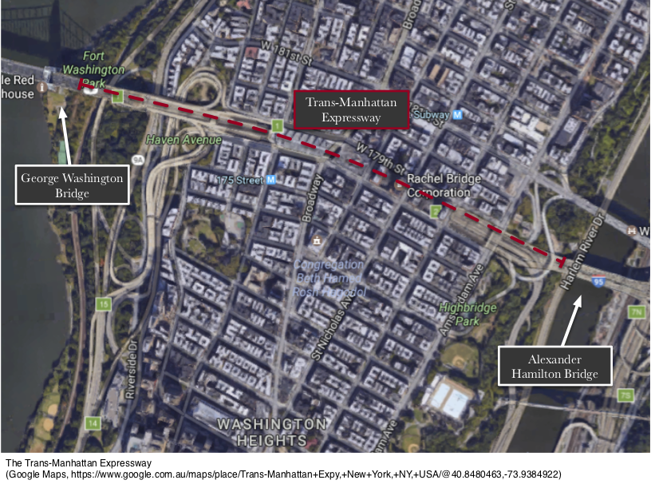
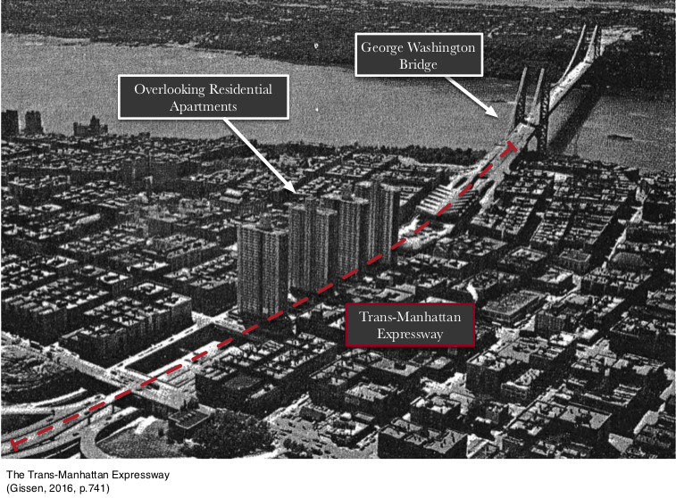
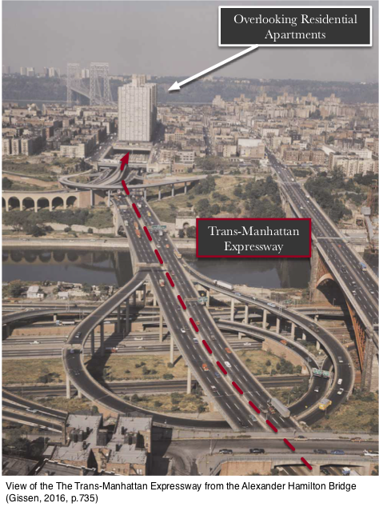
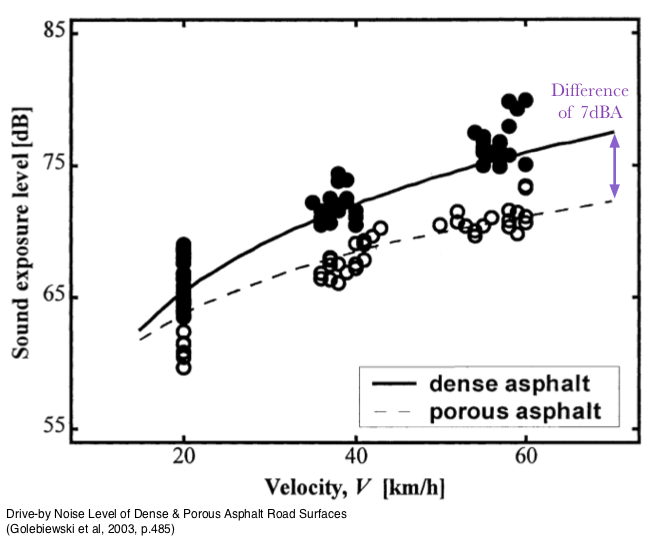
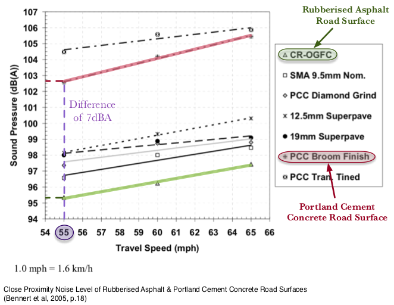

The goal of this project is to replace the road surfaces of the Trans-Manhattan Expressway with noise damping materials in order to reduce the high levels of traffic noise pollution afflicting the residential apartments overlooking the expressway and the surrounding neighbour of Washington Heights, New York City.
This report investigates the cause of the traffic noise problem and whether resurfacing the roads of the Trans-Manhattan Expressway will lead to a significant reduction in noise pollution levels. It also examines road surface materials that are suitable for use in this project.
This report concludes that the Open-Graded Friction Course, and/or the Open-Graded Rubberised Asphalt material can be deployed on the road surfaces of the Trans-Manhattan Expressway in order to attenuate the perceived traffic noise level by more than 40%.
Medical research in the negative health effects caused by excessive noise exposure are unanimous. This justification can be put forward to the New York City Council Committee of Health in order to secure a suitable budget for this project.
To minimise the traffic disruptions caused while the resurfacing work is being conducted, only a small section of the expressway should be resurfaced at a time, and resurfacing should only be conducted during non-peak traffic hours.
It is important to note that in the state of New York, the depth of any road surface replacement is legally required to be at least 7.5 centimetre deep.
Resurfacing the roads of the Trans-Manhattan Expressway will lead to a substantial reduction in road traffic noise due to the significantly high daily traffic flow of the expressway.
Replacing road surfaces do not require the use of additional space in the densely populated neighbourhood of Washington Heights.
Road resurfacing can be implemented on almost all types of traffic landscape.
The Trans-Manhattan Expressway is situated in the neighbourhood of Washington Heights in Manhattan Island, New York City. This 1.3 kilometre long urban highway connects the George Washington Bridge with the Alexander Hamilton Bridge and offers a route for commuting traffic to traverse across the northern section of Manhattan Island.
More than half of the expressway is constructed below ground level, with residential apartments erected over the highway itself. A large number of commercial establishments are also located within the vicinity of the expressway.

Statistics obtained from the United States Census estimates the average daytime population of Manhattan Island to be 3.49 million people per day. It is also noted that more than half of this population do not actually live in Manhattan but commutes there for work, and that 30% of these commuters travel to Manhattan by either car or bus (Moss, & Qing, 2012). This totals the number of traffic commuters to approximately 544 thousand per day.
The Trans-Manhattan Expressway is directly linked to notably, the busiest bridge in the world, the George Washing Bridge. Approximately 283 thousand vehicles crosses the George Washington Bridge everyday, and the bridge itself incurs the highest amount of traffic flow per day, comparative to all other major bridges and tunnels in the United States (Moss, & Qing, 2012). The high amount of traffic flow has undoubtably subjected all establishments within the vicinity of the expressway to a substantial levels of road traffic noise.
An architecture journal by Gissen examines the problems caused by the Trans-Manhattan Expressway to the residential apartments constructed above it. It concludes that the high magnitude of traffic flow along the expressway has contributed to an immense amount of noise and air pollution to the residents of the apartments. In an interview with a tenant living in the fifth storey of one of the apartment building, the tenant attested to the traffic noise issue, lamenting that, “If I were to open the windows you would soon find yourself shouting . . . the noise becomes very irritable. It’s constant. It can drive you to distraction” (Gissen, 2016, p.741).

The World Health Organisation (WHO) and the United States Environmental Protection Agency (US EPA) recommends that the day- night (7am-10pm) exposure of continuous noise should be less than 55 dBA (Lee, Jerrett, Ross, Coogan, & Seto, 2014), and that continuous exposure to noise levels higher than 70dBA will result in permanent hearing loss (Swinburn, & Neitzel, 2014).
A research article by Lee (2014) reveals that the overall continuous noise level of Manhattan Island ranges between 65.1dBA and 73.3dBA. This overall noise level is well above the recommended threshold, and its upper values have surpassed the threshold that will result in hearing loss.
When tyres of a vehicle roll across the surface of a road, the fast rolling movement cause air molecules to be trapped within its treads. These air molecules start resonating with the vibrations of the moving vehicle, and when they are released into the atmosphere, a “whooshing” air noise is emitted (Ho et al., 2013; Gołebiewski, Makarewicz, Nowak, & Preis, 2003).
The porosity of the road surface plays a crucial role in the amount of rolling noises generated by tyre and road contact. A porous road surface material can house a network of void cavities on its surface and within the material itself. This network of void cavities provide a route for the resonating air molecules trapped within the tyre’s thread to escape as the vehicle traverses across the road surface. The released air molecules then collide with the inner surface of cavities, resulting in friction that dissipates the sound energy as heat. This in turn reduces the amount of rolling noise that will propagate into the atmosphere (Ho et al., 2013; Liao et al., 2014; Gołebiewski et al., 2003).
Dense and non-porous road surfaces materials do not possess a network of void cavities on its surface and within the material itself, and therefore cannot provide an escape route for the resonating air molecules. This causes most of the resonating sound energy to be reflected off the road surface and into the atmosphere, resulting in the distinctive “whooshing” air noises heard as vehicles traverse across a road surface (Liao et al., 2014; Ho et al., 2013).
The Street Design Manual published by the New York City Department of Transportation (2015) states that the following materials are currently being utilised in the construction and maintenance of highway roads in the state of New York.
Asphalt concrete is the most widely used material for road surfaces. Although asphalt concrete has been proven to be a reliable road surface material, it is dense and non-porous and therefore does not aid in the attenuation of rolling noises caused by tyre and road contact.
Portland cement concrete is the standard concrete used in most construction projects. It is also dense and non-porous and therefore does not aid in the attenuation of rolling noises caused by tyre and road contact. The rolling noise emission of Portland cement concrete is also noted to be much higher than that of asphalt concrete (New York City Department of Transportation, 2015), and therefore it is deemed less ideal for use on road surfaces.
The Open-Graded Friction Course (OGFC) is a porous material that can be implemented on road surfaces to attenuate tyre and road contact noises. The term “open-graded” refers to the open pores present on the surface and within the material itself and the term “friction course” emphasises the material’s high dynamic friction value (Kowalski, McDaniel, Shah, & Olek, 2009). The network of void cavities on the surface and within this material will dissipate sound energy as heat (Ho et al., 2013; Liao et al., 2014; Gołebiewski et al., 2003), resulting in a lower amounts of noise from propagating into the atmosphere.
The following figure are results obtained from a research done by Gołebiewski (2003, p.483). It compares the frequency spectra of the drive-by noise levels generated by vehicle tyre contact with dense asphalt and porous asphalt (OGFC) road surfaces. The drive-by noise measurement is useful for quantifying noise level perceived by humans under standard everyday conditions.
The vehicle used in this experiment is a Toyota Corolla passenger vehicle traveling at a speed of 60km/h. The use of a passenger car in this experiment is a good representation of the most commonly driven car in New York City (taxis).
As mentioned in an above section of this report, the recommended continuous noise level exposure should be less than 55dBA. The above results reveal that the drive-by noise level above 55dBA occurs between the frequencies of 300Hz and 4000Hz, and the average noise attenuation above this threshold can be approximated to be around 5dBA (Gołebiewski et al., 2003; Liao et al., 2014). This is equivalent to a reduction of 40% in perceived loudness if dense asphalt road surfaces are replaced by porous asphalt. Similar findings are also reflected by another research done by Liao (2014).
It is also important to note that the resonating frequencies of the human ear (2kHz to 4kHz) also falls within this frequency range. A reduction in continuous noise levels within the resonating frequencies of the human ear can greatly reduce the annoyance induced to humans by loud noises (Freitas, Mendonça, Santos, Murteira, & Ferreira, 2012).
The figure below shows results obtained from the same research done by Gołebiewski (2003, p. 485). In this part of the experiment, six types of passenger cars driven at three different speeds were tested for the drive-by noise level generated by tyre and road contact.

Both regression lines approximate the behaviour of the noise level generate by dense asphalt and porous asphalt roads with respect to the speed of the vehicle. Notice that as the speed of the vehicle increases, both regression lines move further and further apart from each other. This behaviour denotes that resurfacing dense asphalt roads with porous asphalt can lead to more attenuation in noise level at higher vehicle speeds.
The speed limit of the Trans-Manhattan Expressway is 89km/h. Relating this to the above results, the noise attenuation at 89km/h will be greater than 7dBA.
The open-graded rubberised asphalt is another porous road surface material that can be deployed to attenuate tyre and road contact noises. Rubberised asphalt is essentially open-grade friction course (OGFC) modified with crumb rubber additives.
Crumb rubber is obtained from shredding rubber materials (notably old unwanted tyres) into smaller fragments. The shredded rubber is combined with asphalt concrete as a polymer binder, and the resultant material is a cost effective variation of the OGFC (Vázquez, Luong, Bueno, Terán, & Paje, 2016; Zhao, & Zhao, 2014).
The following figure shows results obtained from a research done by Bennert (2005) which examines the close proximity noise generated by tyre contact with different road surfaces. The measurement of close proximity noise level is useful for quantifying the isolated noises generated by tyre and road contact.

Note that in the figure above, “CR-OGFC” refers to Crumb Rubber Modified Open-Graded <Friction Course (rubberised asphalt), and “PCC Broom Finish” refers to the standard untreated Portland Cement Concrete. These are the only two results that are relevant to this report. The unit of the speed here is also measured in miles per hour, and the speed limit of the Trans-Manhattan Expressway 55mph (89km/h).
The results reveal that replacing concrete (PCC) road surfaces with rubberised asphalt can lead to a noise attenuation of approximately 7dBA at 55 mph (89km/h) on the Trans-Manhattan Expressway.
The cost of obtaining crumb rubber is extremely low. The integration of the rubber polymer into asphalt concrete also causes the resultant material to expand in volume due to the introduction of void cavity networks in the material (Zhao, & Zhao, 2014). Therefore lesser amount of asphalt concrete will be required to produce a large quantity of rubberised asphalt.
The disposal of unwanted rubber tyres also imposes a multitude of cost problems in the management of waste, globally. The recycling of unwanted rubber tyres in the production of rubberised asphalt can help in alleviating these costs (Huang, Bird, & Heidrich, 2007).
The Trans-Manhattan Expressway is 1.3 kilometres long and consist of a total of 6 lanes. The lane width of all expressway in the US is a standard width of 3.7 metres
A research medical journal published in 2007 by Goines confirms that the highest number of complaints received by the New York quality-of-life hotline are complaints in regard to the high levels of noise pollution in New York City. The 2000 US Census also states that 30% of Americans have complained about living in noisy environments, and 40% of these people are willing to relocate due to this problem (Goines, & Hagler, 2007).
Research in epidemiology also found correlations between the exposure to high levels of continuous noise and health problems such as sleep deprivation, higher levels of anxiety and annoyance, impaired learning capabilities, high blood pressure, and cardiovascular diseases (Goines el al., 2007, Lee et al., 2014; Swinburn et al., 2014).
These compelling medical evidence can be put forward to the New York City Council Committee on Health in order to secure a suitable budget for this project.
Significant noise reduction can be achieved due to the high amounts of traffic flow along the Trans-Manhattan Expressway. Resurfacing the roads of the expressway with noise damping materials will combat the noise directly at its source, reducing the amount that will propagate into the surrounding atmosphere.
Resurfacing roads to reduce traffic noise pollution will not require any additional space (Vázquez, Luong, Bueno, Terán, & Paje, 2016) in the already densely populated neighbourhood of Washington Heights. Lanes of the expressway will however have to be temporary blocked for the resurfacing work to be conducted. Traffic disruptions can be minimised by resurfacing the roads of the expressway one small section at a time, and by conducting the resurfacing work during non-peak traffic hours.
The resurfacing of roads can be applied to most parts of the Trans-Manhattan Expressway. Roads of most shapes and sizes can be resurfaced with noise damping materials in order to attenuate the tyre and road contact noise produced (Vázquez et al., 2016).
This report concludes that utilising noise damping materials on the road surfaces of the Trans-Manhattan Expressway can result in a significant attenuation of traffic noise caused by tyre and road contact. The recommended noise damping materials for use are the Open-Graded Friction Course (Porous Asphalt) or/and the Open-Graded Rubberised Asphalt.
The key advantages of implementing this project is that it does not utilise additional space in the densely populated neighbourhood of Washington Heights, and that road resurfacing can be carry out on most types of traffic landscape.
Gissen, D. (2016). Exhaust and territorialisation at the Washington Bridge Apartments, New York City, 1963–1973. The Journal of Architecture, 21(5), 734-746.
Moss, M. L., & Qing, C. (2012). The Dynamic Population of Manhattan. New York. URL: http://wagner. nyu. edu/rudincenter/publications/dynamic_pop_manhattan. pdf (accessed: 20.08. 2012).
Lee, E. Y., Jerrett, M., Ross, Z., Coogan, P. F., & Seto, E. Y. (2014). Assessment of traffic-related noise in three cities in the United States. Environmental research, 132, 182-189.
Hammer, M. S., Swinburn, T. K., & Neitzel, R. L. (2014). Environmental noise pollution in the United States: developing an effective public health response. Environmental Health Perspectives (Online), 122(2), 115.
Goines, L., & Hagler, L. (2007). Noise pollution: a modern plague. SOUTHERN MEDICAL JOURNAL-BIRMINGHAM ALABAMA-, 100(3), 287.
Ho, K. Y., Hung, W. T., Ng, C. F., Lam, Y. K., Leung, R., & Kam, E. (2013). The effects of road surface and tyre deterioration on tyre/road noise emission. Applied Acoustics, 74(7), 921-925.
Liao, G., Sakhaeifar, M. S., Heitzman, M., West, R., Waller, B., Wang, S., & Ding, Y. (2014). The effects of pavement surface characteristics on tire/pavement noise. Applied Acoustics, 76, 14-23.
Gołebiewski, R., Makarewicz, R., Nowak, M., & Preis, A. (2003). Traffic noise reduction due to the porous road surface. Applied Acoustics, 64(5), 481-494.
Freitas, E., Mendonça, C., Santos, J. A., Murteira, C., & Ferreira, J. P. (2012). Traffic noise abatement: How different pavements, vehicle speeds and traffic densities affect annoyance levels. Transportation Research Part D: Transport and Environment, 17(4), 321-326.
Vázquez, V. F., Luong, J., Bueno, M., Terán, F., & Paje, S. E. (2016). Assessment of an action against environmental noise: Acoustic durability of a pavement surface with crumb rubber. Science of The Total Environment, 542, 223-230.
Zhao, M. L., & Zhao, Z. J. (2014). Study on Noise Reduction Mechanism and Surface Performance of Crumb Rubber Micro-Surfacing Material. In Key Engineering Materials (Vol. 599, pp. 257-260). Trans Tech Publications.
Bennert, T., Hanson, D., Maher, A., & Vitillo, N. (2005). Influence of pavement surface type on tire/pavement generated noise. Journal of Testing and Evaluation, 33(2), 1-7.
Huang, Y., Bird, R. N., & Heidrich, O. (2007). A review of the use of recycled solid waste materials in asphalt pavements. Resources, Conservation and Recycling, 52(1), 58-73.
Kowalski, K., McDaniel, R., Shah, A., & Olek, J. (2009). Long-Term Monitoring of Noise and Frictional Properties of Three Pavements: Dense-Graded Asphalt, Stone Matrix Asphalt, and Porous Friction Course. Transportation Research Record: Journal of the Transportation Research Board, (2127), 12-19.
ork City Department of Transportation. (2015). Materials: Roadways. Street Design Manual (pp. 126-129). United States: Vanguard Direct.